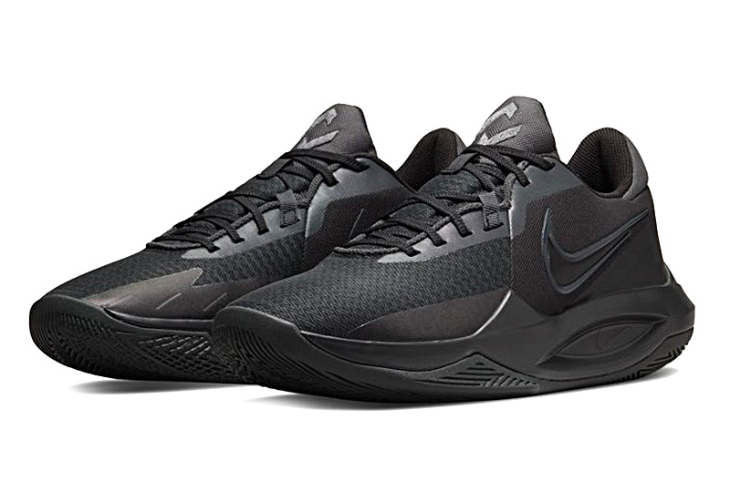

Nike Precision 6

Nike Precision 6, um dos tênis de basquete mais acessíveis do mercado. Esse estilo
existe há anos e ganha muitos fãs a cada nova edição pelo grande valor que oferece.
Por apenas R$ 450 no varejo sugerido, é um dos tênis de basquete mais baratos e
provavelmente o melhor por esse preço. Assim como no Impact 4 , a Nike usou materiais
básicos para construir um tênis com ótimo desempenho em quadra, mesmo sem a unidade Air
Max no calcanhar, por isso o preço ainda mais baixo. A marca aperfeiçoou seus designs
ao longo do tempo para que eles possam oferecer até mesmo um sapato tão básico e o
Precision 6 é certamente um sucesso nesse aspecto.